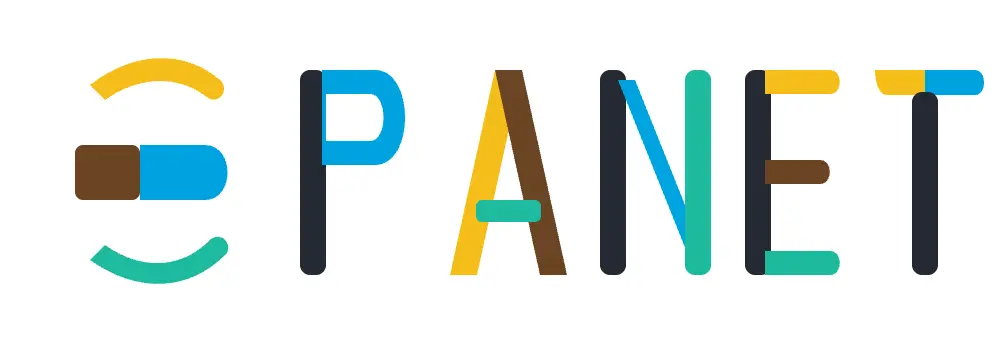
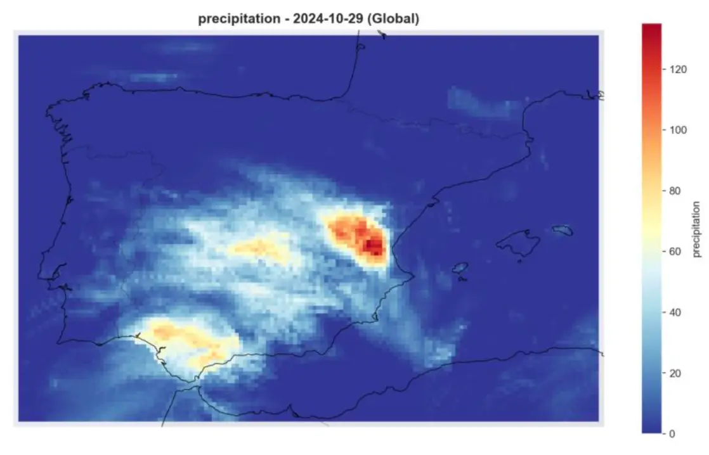
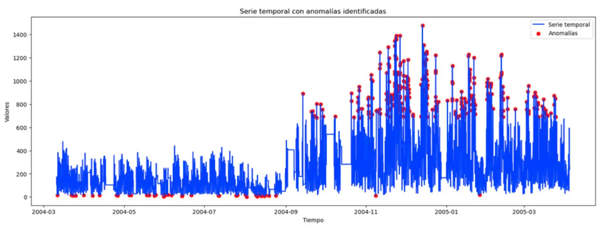

EPANET: Predicción de la demanda eléctrica

Proyecto de análisis de datos para predecir la demanda eléctrica y detectar anomalías entre la demanda real y la programada.
Estudiante de Ingeniería Informática y Matemática Aplicada al Análisis de Datos, Desarrollo Web y de Apps
Perfil analítico y resolutivo, con facilidad para el aprendizaje y la adaptación a nuevos entornos.
Destaco por el trabajo en equipo, la organización y la motivación para afrontar retos con iniciativa.
| Centro | Titulación | Años |
|---|---|---|
| Universidad Europea | Doble grado en Ingeniería Matemática Aplicada al Análisis de Datos e Ingeniería Informática | 2022-2028 |
| Nota: Formación actualmente en curso. | ||

Proyecto de análisis de datos para predecir la demanda eléctrica y detectar anomalías entre la demanda real y la programada.

Proyecto centrado en el uso de modelos de aprendizaje automático para detectar y anticipar fenómenos meteorológicos extremos.

Modelos de series temporales y aprendizaje automático para predecir el diferencial de precios este-oeste (East/West spread) de la nafta, optimizando decisiones de arbitraje comercial.